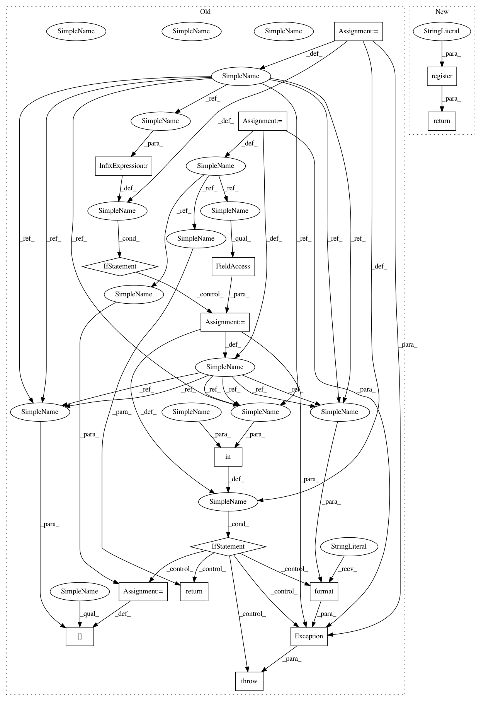

d4cc1224a0aa4127b5df3993be5c7d3f5a5c3637,python/baseline/train.py,,register_trainer,#Any#Any#,68
Before Change
Use this pattern if you want to provide an override to a `Trainer` class.
if name is None:
name = cls.__name__
if name in BASELINE_TRAINERS:
raise Exception("Error: attempt to re-defined previously registered handler {} in trainer registry".format(name))
BASELINE_TRAINERS[name] = cls
return cls
BASELINE_FIT_FUNC = {}
After Change
Use this pattern if you want to provide an override to a `Trainer` class.
return register(cls, BASELINE_TRAINERS, name, "trainer")
BASELINE_FIT_FUNC = {}
In pattern: SUPERPATTERN
Frequency: 3
Non-data size: 16
Instances
Project Name: dpressel/mead-baseline
Commit Name: d4cc1224a0aa4127b5df3993be5c7d3f5a5c3637
Time: 2018-10-18
Author: blester125@users.noreply.github.com
File Name: python/baseline/train.py
Class Name:
Method Name: register_trainer
Project Name: dpressel/mead-baseline
Commit Name: d4cc1224a0aa4127b5df3993be5c7d3f5a5c3637
Time: 2018-10-18
Author: blester125@users.noreply.github.com
File Name: python/baseline/reporting.py
Class Name:
Method Name: register_reporting
Project Name: dpressel/mead-baseline
Commit Name: d4cc1224a0aa4127b5df3993be5c7d3f5a5c3637
Time: 2018-10-18
Author: blester125@users.noreply.github.com
File Name: python/baseline/vectorizers.py
Class Name:
Method Name: register_vectorizer